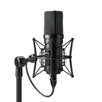
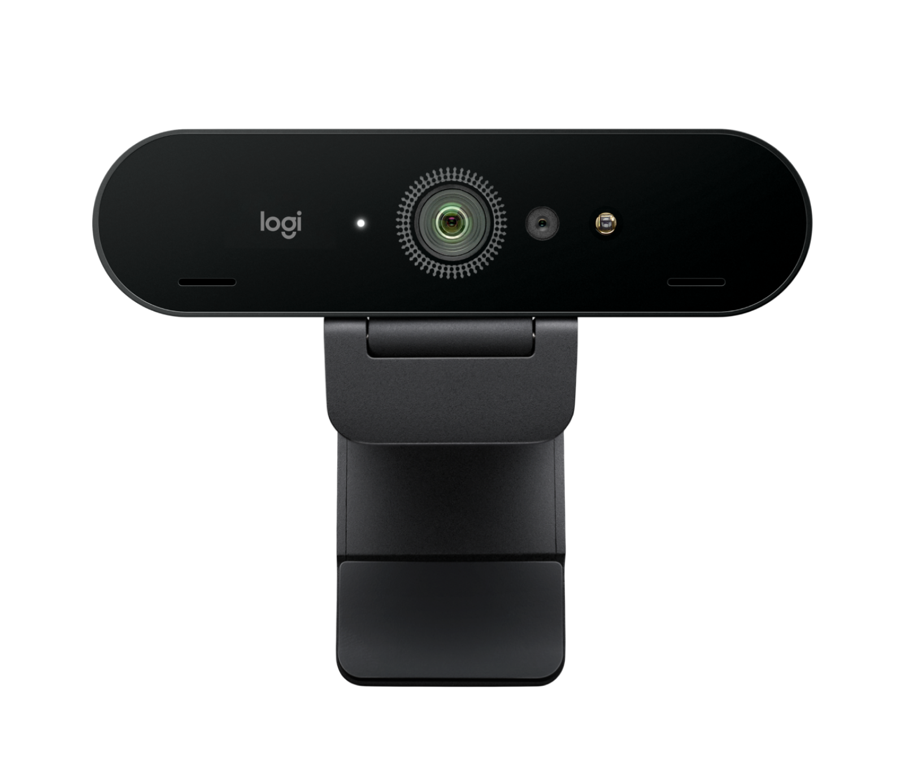
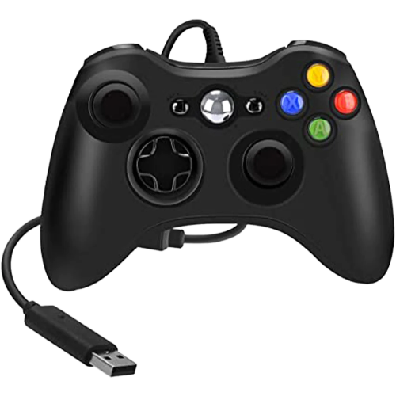
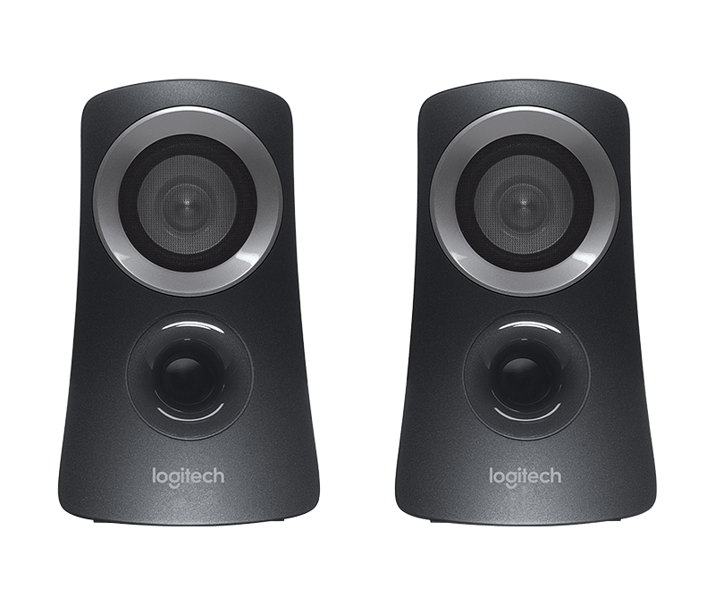

Los perifericos o accesorios para las computadoras, como bien lo dice, son extensiones de las computadoras o incluso celulares y tablets, ordenardores en si. Hay varios perifericos para las PC, pero estan los principales y secundarios.
¿Que son?
Principales
Son los mas necesarios, los que sin ellos no podemos utilizar nuestra PC, los cuales son:
- Teclados
- Mouses
Estos son con los que manejaremos la PC, son indipensables.
Secundarios

Cascos(Auriculares)
- Estos, permiten una comodidad alta para las orejas y la audicion, aprovechando los bajos y cancelacion del ruido del exterior.
- Tambien la integracion de microfonos.
- Estos los podemos usar para escuchar musica, jugar, estar en llamada o incluso los 3.
-La calidad del sonido e integracion de microfono dependen de la marca.

Microfonos
- Estos permiten una comunicacion mediante la PC sin la necesidad de Auriculares, permitiendonos hablar con cualquiera persona o dependiendo lo que queramos hacer.
- Dependiendo la calidad, pueden ser mas claros que un microfono integrado en un Auricular.
- Estos se pueden configurar mediante programas (que pueden venir en el manual o sino se debe buscar una guia sobre el) para que los demas te escuchen mas claros o de cierta manera. Esto se utilizaria en caso de que tu audio suene mal o quieras probrar
- Los de calidad, suelen ser caros, aunque eso no quita que pueden fallar o ser mal configurados. Aun asi, los baratos tambien pueden salir buenos.

Camaras o Webcams
- Estas camaras permiten, que podamos transmitir videos o imagenes sin necesidad de utilizar el celular.
- No son dificiles de configurar y puedes usarlo en varios tipos de ordenadores.
- La calidad de imagen puede variar segun la marca y sus materiales.
- El diseño dependera tambien de la marca.

Mandos o Joysticks
- Son utilizados para videojuegos, brindando una mayor comodidad para jugar (dependiendo el juego y tu habilidad).
- Su configuracion, dependera del juego.
- Su calidad y compatibilidad dependen de la marca y si son de segunda mano.
- No todos los mandos son compatibles con todos los juegos, e incluso los ordenardores. Si estas en una consola, usa los mandos de esa marca. Si estas en PC, los mas recomendable son los de Xbox, la cual pertenece a Microsoft, creador de Windows (sistema que manejan las mayorias de PCs)

Altavoces o parlantes
- Permiten que el sonido de nuestra PC (programas y videos) salgan y se escuchen por toda el area, como en tu habitacion. Esto sirve para ver peliculas, videos, etc; con varias personas.
- Se utilizan mas cuando el monitor no tiene propios parlantes.
- Su calidad de audio depende de la marca y donde fueron comprados.
Pero tambien hay varios que se usan en areas especificas o de poco uso.
Ejemplos:
- Escanneres
- Proyectores
- Impresoras
- Pantallas tactiles
- Modems
- Hubs
- Switches
- Routers